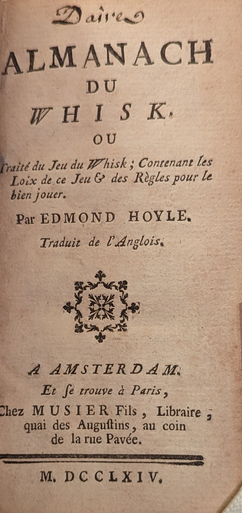

A Descriptive Bibliography of Edmond Hoyle
Copyright © 2014-26 by David Levy
(page updated 2026-03-20)User Guide
Musier.Whist.Fr.1764
Almanach du Whisk, Chez Musier Fils, 1764.
 |
Title: | ALMANACH | DU | WHISK, | OU | Traité du Jeu du Whisk; Contenant les | Loix de ce Jeu & des Règles pour le | bien jouer. | Par EDMOND HOYLE. | Traduit de l'Anglois. | [tailpiece] | A AMSTERDAM. | Et ſe trouve à Paris, | Chez MUSIER Fils, Libraire, | quai des Auguſtins, au coin | de la rue Pavée. | [oxford rule] | M. DCCLXIV. |
| Collation: | 24o: π2 A–F8/4 G6 H4 [$½ (−B1,2,H1,2) signed]; 48 leaves, pp. [4 ] 1–80 [12 ] |
| Contents: | Signature (Page) Reference | Contents | Signature (Page) Reference | Running Titles |
| π1r | title | |||
| π1v | blank | |||
| π2r–π2v | ‘[oxford rule] | TABLE | DES CHAPITRES, | [...]’ | π2v | ‘TABLE’ | |
| A1r–G4v (1–80) | ‘[row of type orn] | Traité du Jeu du Whisk, [...] | [...]’ | |||
| G5r–H4v | Almanack for the year 1764 |
| Publisher: | Chez Musier fils |
| References: | Depaulis 95 |
| Copies Seen: | Levy [1615] |
| Other Copies: | BNF [V-41820]; NvLN [GV1241.H69 1764] |